Миссия проекта «Секреты вкуса»:
- возможность приготовить дома изысканное ресторанное блюдо по рецепту от известного шеф-повара
- раскрытие профессиональных секретов бренд-шефа, которыми обычно не делятся рестораны высокой кухни
- просвещение в области гастрономической моды
- популяризация высокой кухни
- знакомство с инновационными методами приготовления блюд в домашних условиях и лучшими отечественными продуктами
Проект реализуется в формате экшен-шоу и предполагает серию выпусков программы «Rossinsky. Секреты вкуса», в ходе которых зрители могут увидеть, как звезды театра, кино или эстрады под руководством опытных шеф-поваров занимаются приготовлением блюд высокой кухни по оригинальным рецептам и при этом рассказывают о каких-то ранее не известных моментах из своей жизни.
Одной из важнейших целей проекта является развитие в башкирской столице гастрономического туризма, потому он позволяет заочно познакомиться с рестораном «Rossinsky», его неповторимой атмосферой и непревзойденной кухней. Естественно, что при посещении Уфы гость непременно захочет вживую насладиться потрясающим вкусом блюда, о котором он узнал благодаря «Секретам вкуса».
Идейные вдохновители проекта - Президент ГК «Аструм» Денис Назаров и известный московский ресторатор Александр Затуринский, основатель более пятидесяти знаковых заведений, среди которых: ресторан-театр Madison, Бэд Café, удостоившийся «Лаврового листа» Cipollino, Simple Pleasures, Zaturabar, вошедший в десятку лучших ресторанов мира White Rabbit, нашумевшие Облака и другие.
- 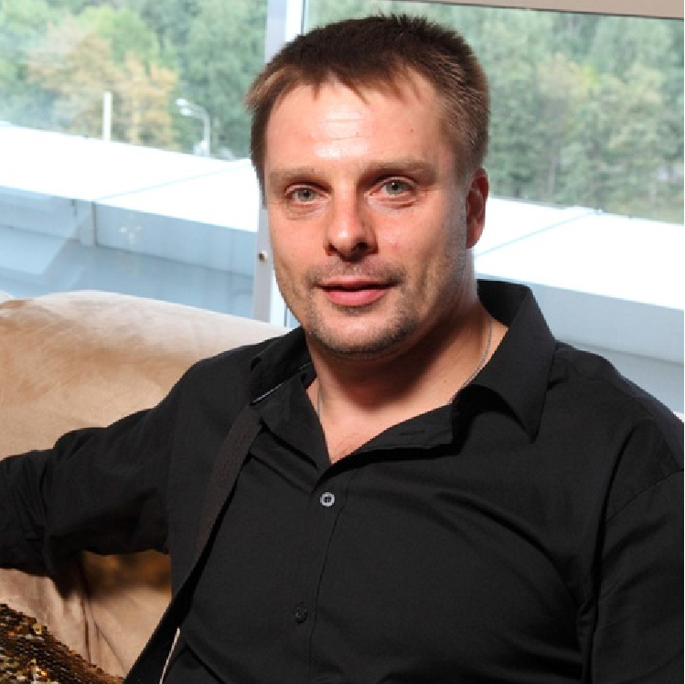Как приготовить утиные ножки конфи? В гостях Александр Носик
- 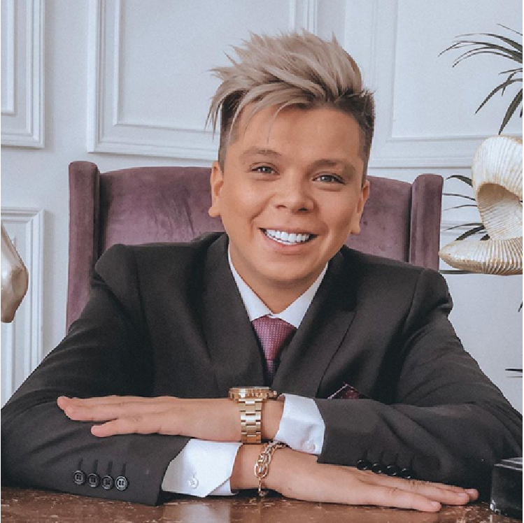Cалат с баклажанами С Элвин Греем
- 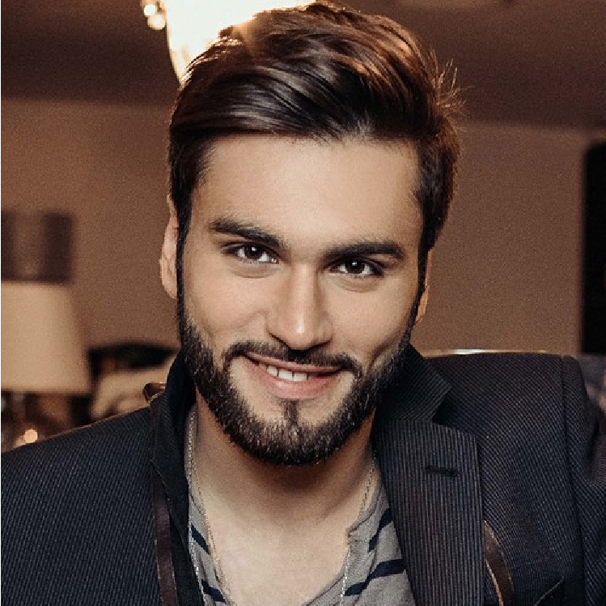Готовим Том ям В гостях Нодар Ревия
- 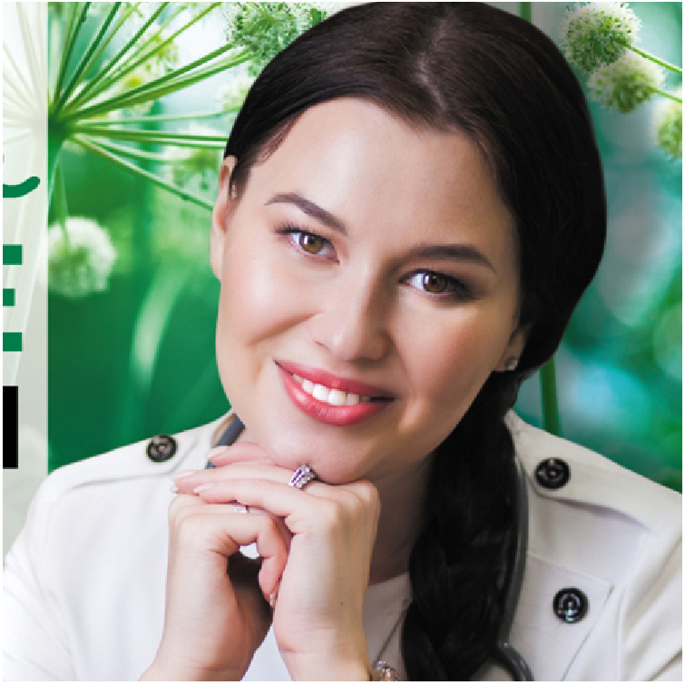Нет информации Нет информации
- 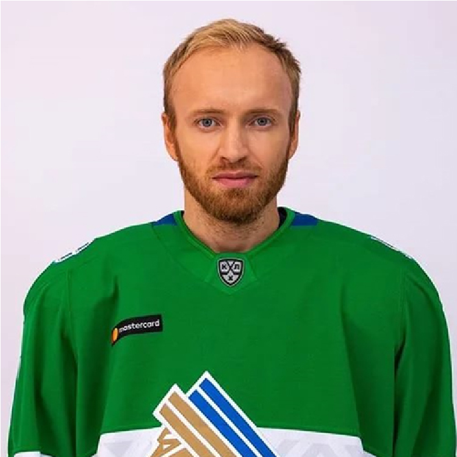Шоколадный фондан с Григорием Паниным
- Нет информации Нет информации
- 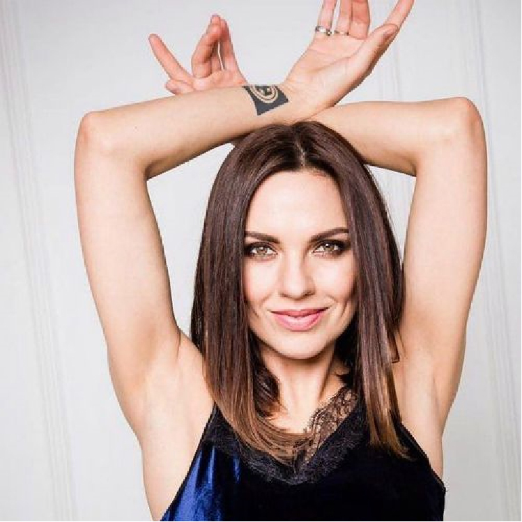Нет информации Нет информации
- 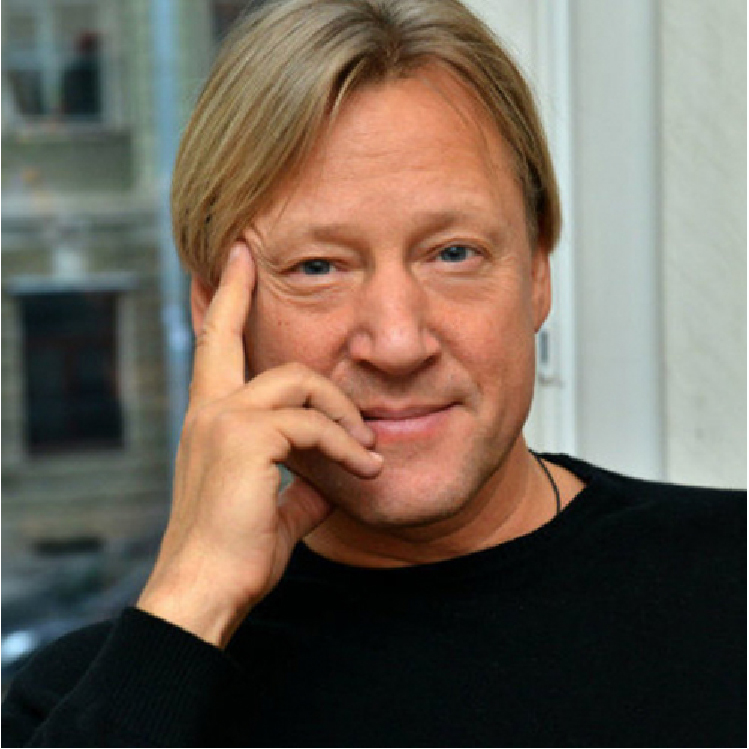Фаршированные мини кальмары В гостях Дмитрий Харатьян
- Английский суп чаудер В гостях Юлия Гамаева
- 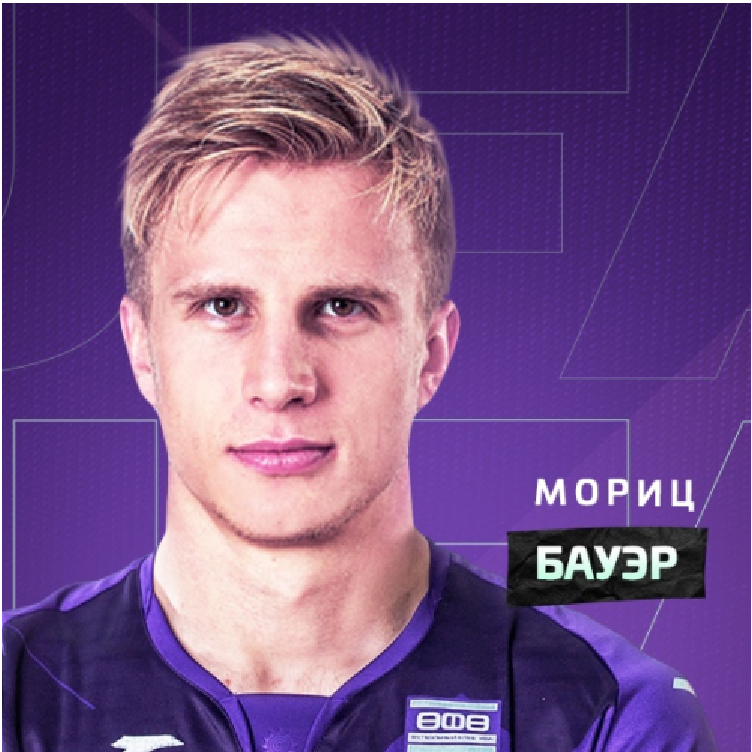Салат с баклажанами С Мориц Бауэром
- 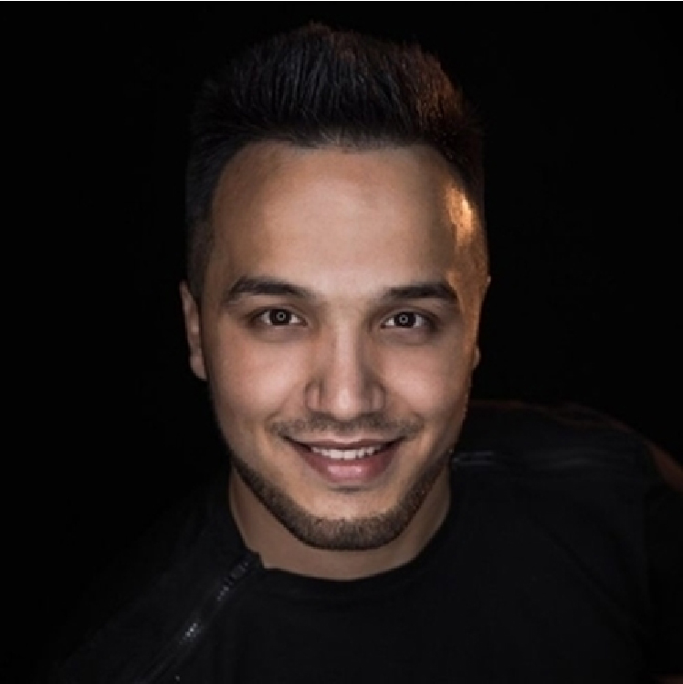Готовим яблочный пирог с ванильным мороженымс Зайнетидином
- 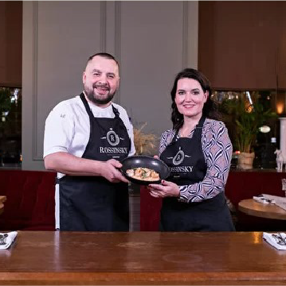Как приготовить креветки с хурмой и имбирным соусом с Антоном Клетаровым
- 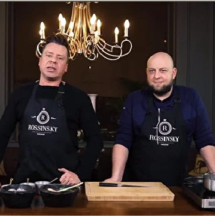Как приготовить стейк салат с денвером с Рушанией Бадретдиновой
- 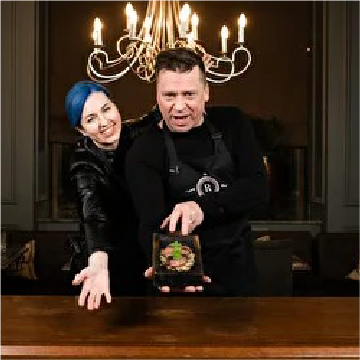Как приготовить ризотто с шафраном с Рушанией Бадретдиновой
- Как приготовить креветки с хурмой и имбирным соусом с Антоном Клетаровым
- Как приготовить стейк салат с денвером с Рушанией Бадретдиновой
- Как приготовить ризотто с шафраном с Рушанией Бадретдиновой